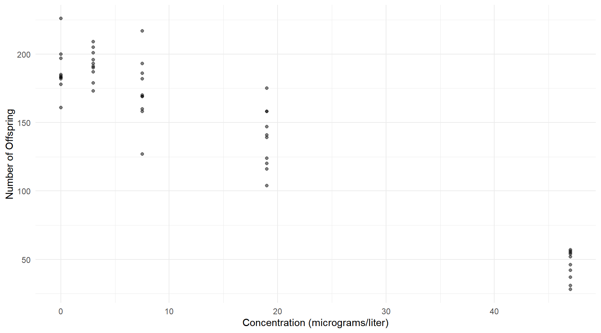
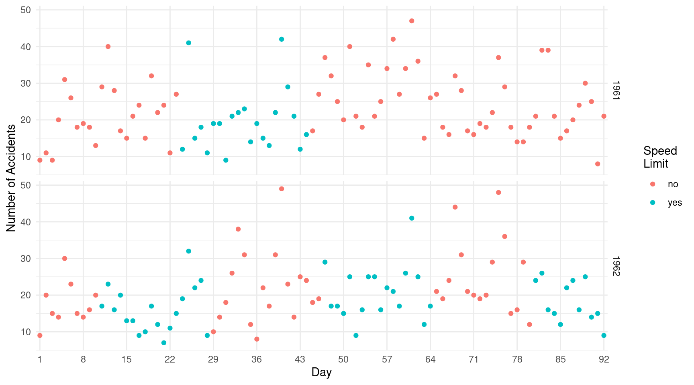
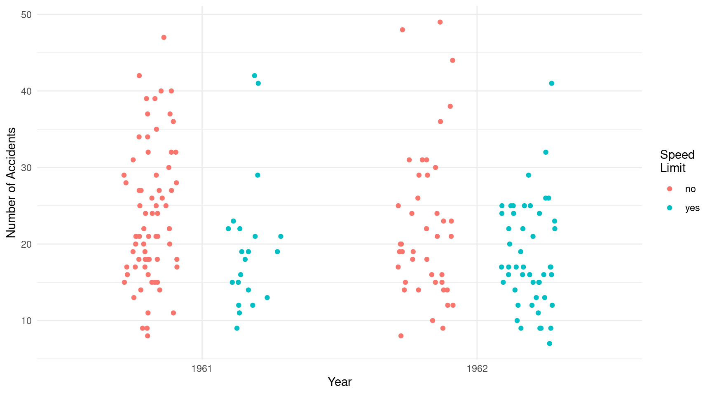
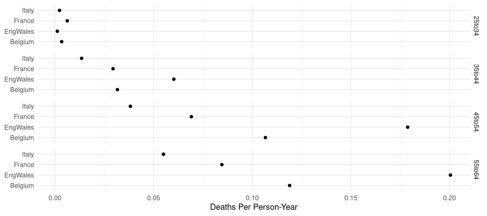
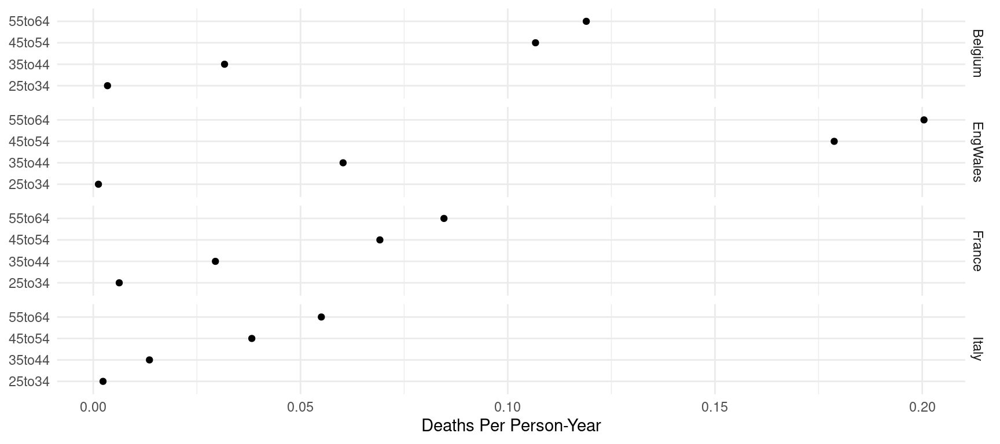
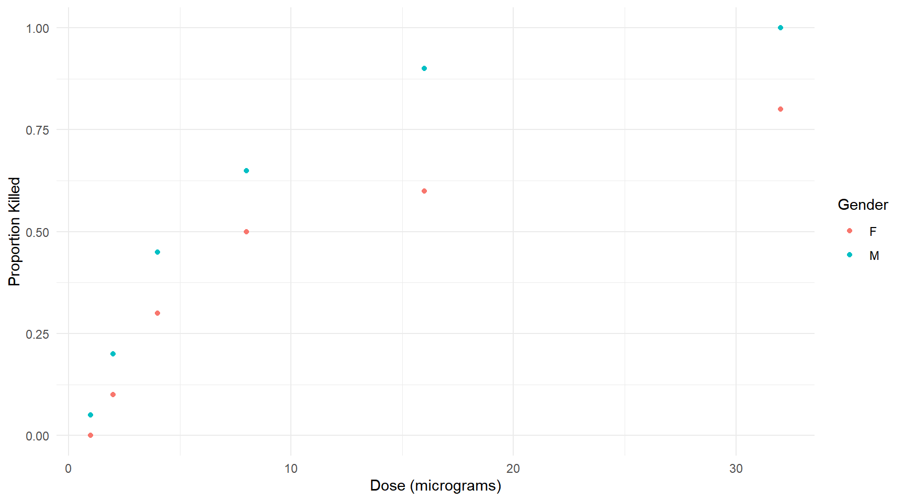

You can also download a PDF copy of this homework assignment.
This homework assignment concerns the specification and
interpretation of Poisson and logistic regression models. In comparison
to the past two homework assignments, there is more emphasis here on
interpretation, mainly by using rate ratios or odds ratios. So
pay careful attention to your wording when interpreting a model using
one of these ratios. An important part of statistical modeling is being
able to understand and communicate what a model is saying about the
statistical relationship between the expected response and the
explanatory variable(s). You will need to have installed several
packages for this assignment including trtools,
ggplot2, emmeans (optional),
SMPracticals, dobson, and
GLMsData. Note that to be able to access data frames in
the GLMsData package you will need to use the
data function (see my code below).
Note: You may get an error saying
family not recongized when using glm to
estimate a Poisson regression model. The dobson package
contains a data frame which is named poisson which will
mask the poisson object that in R that is used in
family = poisson in the glm function. To avoid
this you can either use family = stats::poisson or
explicitly name the link function such as
family = poisson(link = log).
This assignment is due by 5:00 PM on Monday, April 4th. Email me your homework at trjohns@uidaho.edu. If possible, save/export your homework as a PDF file. Late assignments will be penalized by 10% if turned-in within 12 hours of the deadline, and 10% more for each additional 12 hour interval.
Your solutions must be typed and very neatly organized. I will not try to infer your solutions if they are not clearly presented. Mathematical expressions need not be typeset perfectly but they should be clear. You may substitute letters for symbols (e.g., b1 for \(\beta_1\)) and use other shortcuts for mathematical notation if no meaning is lost.
You must include with your solutions the relevant R output and R code that created them. Be sure that you provide sufficient code that I can replicate your results. Include both the code and the output within the text of your solutions (not in an appendix) using cut-and-paste. But edit your output so as to provide only that which is relevant to answering the questions. Use a monospace font (e.g., Courier or Monaco) for R code and output for clarity. Do not use a monospace font for text that is not R code or output.
Plots from R Studio can be exported in various formats or directly to the clipboard using the “export” menu in the top-left part of the plot panel.
It is permitted for you to discuss the homework with other students in the course. However your work including R code, output, and written answers must be your own.
You are very welcome to ask me questions. I will be happy to clarify what I am asking in any of the questions and will provide you some help with solving problems by showing you how to work through similar problems from class. I will also be open to helping with any R problems. If you email me with a R question, it will usually be helpful for you to include enough of your R script so that I can replicate your issue. But please avoid saving all your questions for just before the assignment is due. I can usually respond quickly to questions, but I will sometimes need time to respond.
The data frame nabr in the trtools
package is from a study of the toxicity of sodium bromide
(NaBr) on the reproduction of Daphnia magna.1 Sodium
bromide is commonly used in oil and gas drilling and as an antiseptic.
It can cause ecological problems if it finds its way into water systems.
This study exposed Daphnia magna to different concentrations of sodium
bromide over 23 days. The number of offspring per adult over that period
was observed. As shown below the mean number of offspring decreased with
the concentration of sodium bromide.
library(trtools)
library(dplyr)
nabr %>% group_by(concentration) %>% summarize(mean = mean(young))# A tibble: 5 x 2
concentration mean
<dbl> <dbl>
1 0 188.
2 3 192.
3 7.5 173.
4 19 138.
5 47 45.8The figure below shows a plot of the data.
library(ggplot2)
p <- ggplot(nabr, aes(x = concentration, y = young)) +
theme_minimal() + geom_point(alpha = 0.5) +
labs(x = "Concentration (micrograms/liter)", y = "Number of Offspring")
plot(p) Since the response variable is a count these data could maybe be modeled using Poisson regression.
Estimate two Poisson regression models with concentration as the
explanatory variable and number of offspring as the response variable.
For one model treat concentration as a quantitative explanatory variable
(i.e., as is), and for the other treat concentration as a categorical
explanatory variable by converting it to a factor (either by converting
it to a factor within the model formula using
factor(concentration) or by creating a new variable with
something like
nabr$concentrationf <- factor(nabr$concentration)). Show
the parameter estimates and their standard errors for each model using
the summary function.
Create a plot showing the estimated expected number of offspring as a function of concentration for the model you estimated in the previous problem where concentration was treated as a quantitative explanatory variable.
Using the contrast function, estimate four rate
ratios for comparing the expected number of offspring at concentrations
of 3, 7.5, 19, and 47 micrograms/liter to the expected number of
offspring at a concentration of zero micrograms/liter. Do this for
both of the models you estimated earlier. Write a sentence to
interpret each rate ratio in terms of what it shows about the effect of
a given concentration relative to a zero concentration on the expected
number of offspring.
For each of the two models you estimated earlier, create a residual plot of standardized or studentized residuals against the predicted values. Based on these residual plots, which model do you think better fits the data. Explain your reasoning.
Consider the model you estimated earlier where concentration was
treated as a quantitative variable. That model can be written as \(\log E(Y_i) = \beta_0 + \beta_1 x_i\),
where \(Y_i\) and \(x_i\) are the \(i\)-th observations of the number of
offspring and concentration, respectively. We sometimes call this a
log-linear model since the log of the expected response is a linear
function. Now consider two other models: a linear Poisson
regression model which can be written as \(E(Y_i) = \beta_0 + \beta_1 x_i\), and a
quadratic polynomial log-linear model which can be written as
\(\log E(Y_i) = \beta_0 + \beta_1 x_i +
\beta_2 x_i^2\).2 The linear model can be specified by using
an “identity” rather than a log link function (i.e., use
link = identity rather than link = log in the
glm function). The polynomial log-linear model can be
specified just like other Poisson regression models but using either the
I inhibit function or the poly function to
specify the polynomial (see the discussion of polynomial regression).
Estimate each of these models using the glm function,
reporting the parameter estimates and their standard errors using
summary. Also plot the standardized or studentized
residuals against the predicted values for each model. Based on these
residual plots, how do the the four Poisson regression models that you
have now estimated compare in terms of their fit to the data? Explain
your reasoning. Note: This problem is extra
credit for students in Stat 436, but is required for
students in Stat 516.
The data frame nabr in the SMPracticals
package contains data from a observational study of the effects of speed
limits on the number of traffic accidents.3 This study was carried
out in Sweden during the summers of 1961 and 1962 during comparable days
(e.g., if an observation was made during the first Monday of July in
1961, an observation was also made during the first Monday of July in
1962). Periods of no speed limits were alternated with a posted speed
limit of 90 km/h or 100 km/h. The number of traffic accidents with
personal injuries that occurred and were reported each day during the
study was recorded. The data are in “wide form” with each row showing
observations from both 1961 and 1962.
library(SMPracticals)
head(limits) day lim1 lim2 y1 y2
1 1 0 0 9 9
2 2 0 0 11 20
3 3 0 0 9 15
4 4 0 0 20 14
5 5 0 0 31 30
6 6 0 0 26 23Here lim and lim2 are indicator variables
for if a speed limit was posted on a given day in 1961 and 1962,
respectively, and y1 and y2 are the number of
traffic accidents on a given day in 1961 and 1962, respectively. For
plotting and modeling it is useful to put the data into “long form”
where each row is an observation from a given day in a given year.4
library(dplyr)
library(tidyr)
limitstudy <- limits %>%
rename(limit_1961 = lim1, limit_1962 = lim2, y_1961 = y1, y_1962 = y2) %>%
pivot_longer(cols = -day, names_to = c(".value", "year"), names_sep = "_") %>%
mutate(limit = factor(limit, levels = c(0,1), labels = c("no","yes")))
head(limitstudy)# A tibble: 6 x 4
day year limit y
<fct> <chr> <fct> <int>
1 1 1961 no 9
2 1 1962 no 9
3 2 1961 no 11
4 2 1962 no 20
5 3 1961 no 9
6 3 1962 no 15Compare the original data in limits to the new data
frame limitstudy and you can see how the data have been
“reshaped” by the code above. Also note that I formatted the
limit into a factor with more clear level labels. Here is a
plot of the data showing the number of accidents each day by year and
whether or not a speed limit was posted.5
library(ggplot2)
p <- ggplot(limitstudy, aes(x = day, y = y, color = limit)) +
theme_minimal() + geom_point() + facet_grid(year ~ .) +
scale_x_discrete(breaks = seq(1, 92, by = 7)) +
labs(x = "Day", y = "Number of Accidents", color = "Speed\nLimit")
plot(p) It might be important to account for the effect of day since the risk of accidents may vary over time, and the figure above shows that the speed limits were not randomly or uniformly distributed over days. But for this problem you will ignore any effect of day and just focus on how the expected number of accidents varies by year and by whether or not a speed limit was posted.6 The table below shows the data without accounting for day.
set.seed(111)
p <- ggplot(limitstudy, aes(x = year, y = y, color = limit)) +
theme_minimal() + geom_point(position = position_jitterdodge()) +
labs(x = "Year", y = "Number of Accidents", color = "Speed\nLimit")
plot(p) The sample statistics show that the number of accidents was, on average, lower when speed limits were posted.
limitstudy %>% group_by(year, limit) %>% summarize(mean = mean(y))# A tibble: 4 x 3
# Groups: year [2]
year limit mean
<chr> <fct> <dbl>
1 1961 no 23.7
2 1961 yes 19.7
3 1962 no 22.2
4 1962 yes 18.4In this problem you will consider using regression models for
inferences concerning the relationship between the posting of a speed
limit and the expected number of accidents. The main focus here is on
how posting a speed limit is related to the expected number of
accidents, but controlling for year by including it as an explanatory
variable is important since the accident rate may have varied by year
and year is partially confounded with speed limit since speed limits
were posted more often in 1962 than in 1961. Be sure you use the data
frame limitstudy created above for your model.
Estimate a Poisson regression model with the number of accidents as the response variable and the speed limit (yes or no) and year (1961 or 1962) as explanatory variables. Do not include an interaction in your model. Year here should be treated as a categorical variable (i.e., a factor) but it is not necessary to convert it to a factor since it is stored in the data frame as a character variable and not a number, so R will automatically interpret it as a factor when it is used as an explanatory variable.7
Using either contrast or functions from the
emmeans package, produce estimates and confidence
intervals for the expected number of accidents with and without a posted
speed limit in 1961, and again in 1962.
Using either contrast or functions from the
emmeans package, estimate the rate ratio for the
expected number of accidents when a speed limit was posted versus when
it was not. Note that while you can estimate a separate rate ratio for
1961 and another for 1962, they should be equal since the model does not
include an interaction. Report the rate ratio and its confidence
interval, and write a sentence that interprets the value of the rate
ratio in terms of the the expected number of accidents when a speed
limit was posted versus when it was not.
The data frame cervical in the GLMsData
package is an observational study of the death rates due to cervical
cancer by age group in four countries/regions in Europe.8 The data are shown
below. Note that using data(cervical) is necessary here to
make the data frame accessible.9
library(GLMsData)
data(cervical)
cervical Country Age Deaths Wyears
1 EngWales 25to34 192 153999
2 EngWales 35to44 860 14268
3 EngWales 45to54 2762 15450
4 EngWales 55to64 3035 15142
5 Belgium 25to34 8 2328
6 Belgium 35to44 81 2557
7 Belgium 45to54 242 2268
8 Belgium 55to64 268 2253
9 France 25to34 96 15324
10 France 35to44 477 16186
11 France 45to54 998 14432
12 France 55to64 1117 13201
13 Italy 25to34 45 19115
14 Italy 35to44 255 18811
15 Italy 45to54 621 16234
16 Italy 55to64 839 15246The observed death rate can be computed by dividing the number of
deaths (Deaths) by the number of woman-years
(Wyears). The latter, which is usually called
“person-years” in gender-neutral applications, is a unit of measurement
that takes into account both the number of people and the amount of time
they are being observed.10 For example, if we had ten people each
observed for five years then that would be 50 person-years. Or if we had
one person observed for five years and another observed for two that
would be a total of seven person-years. The rate can then be defined in
terms of number of deaths due to cervical cancer per person-year, or per
person per year. The plot below shows the observed rate of deaths to
cervical cancer by country and age group.
library(ggplot2)
p <- ggplot(cervical, aes(x = Deaths / Wyears, y = Country)) +
theme_minimal() + geom_point() + facet_grid(Age ~ .) +
labs(y = NULL, x = "Deaths Per Person-Year")
plot(p) Alternatively we could plot the observed rates by grouping them by country.
p <- ggplot(cervical, aes(x = Deaths / Wyears, y = Age)) +
theme_minimal() + geom_point() + facet_grid(Country ~ .) +
labs(y = NULL, x = "Deaths Per Person-Year")
plot(p) The goal here is to model the rate of deaths due to cervical cancer to compare the rates between countries/regions and also between age groups.
Estimate a Poisson regression model for the rate of deaths due to
cervical cancer that produces the following output when using
summary.
Estimate Std. Error z value Pr(>|z|)
(Intercept) -6.7040 0.06859 -97.744 0.000e+00
CountryEngWales 0.5105 0.04267 11.964 5.481e-33
CountryFrance -0.3119 0.04518 -6.904 5.071e-12
CountryItaly -0.8704 0.04730 -18.400 1.318e-75
Age35to44 3.3888 0.05990 56.574 0.000e+00
Age45to54 4.4201 0.05651 78.223 0.000e+00
Age55to64 4.5905 0.05625 81.612 0.000e+00Note that since the number of person-years varies by country/region
and age group you will need to use an offset variable. Report the
parameter estimates and their standard errors using
summary.
Using either contrast or functions from the
emmeans package, estimate three ratios that compare the
expected death rate for the three older age groups with the youngest age
group. Summarize each rate ratio in a sentence that describes clearly
how the age groups compare with respect to the death rate.
Using either contrast or functions from the
emmeans package, estimate three ratios that compare the
expected death rate in England and Wales with the three other countries.
Summarize each rate ratio in a sentence that describes clearly how the
countries/regions compare with respect to the death rate.11
The data frame budworm in the GLMsData
package is from a study of the toxicity of the pyrethroid
trans-cypermethrin in tobacco budworm (Heliothis virescens)
which are responsible for considerable damage to cotton crops in North
and South America.12
library(ggplot2)
library(GLMsData)
data(budworm)
p <- ggplot(budworm, aes(x = Dose, y = Killed/Number, color = Gender)) +
theme_minimal() + geom_point() +
labs(x = "Dose (micrograms)", y = "Proportion Killed")
plot(p) In this problem you will use logistic regression to investigate the effect of dose on mortality.
Estimate two logistic regression models: one using dose
and gender as explanatory variables, and a second using the
logarithm of dose and gender as explanatory variables. For the
model using the logarithm of dose as an explanatory variable, include
the transformation within the model formula as log(dose)
rather than creating a new variable in the data frame. Both models
should include an interaction between dose (or log of dose) and gender.
Report the parameter estimates and their standard errors for both models
using the summary function, and plot both models by adding
curves to the plot above to show the estimated expected proportion of
dead budworms as a function of dose and gender. You can either make one
plot showing both models, or one plot for each model.
For the model without the log transformation of dose, estimate
the odds ratio for each gender for the effect of increasing dose by one
unit (i.e., one microgram), and for the model with the log
transformation of dose, estimate the odds ratio for each gender for the
effect of doubling the dose. Use the contrast function to
estimate the odds ratios. Summarize each odds ratio in a sentence that
describes clearly the effect of increasing the dose for a given gender
of tobacco budworm.
The plots show that the estimated probability of mortality is
higher for male tobacco budworms (except perhaps at very low doses). Use
either the contrast function or functions from the
emmeans package to estimate the odds ratio for the
effect of gender (i.e., comparing males to females) at a dose of five
micrograms, and again at a dose of 10 micrograms. Do this for both
models you estimated earlier. Summarize each of the four odds ratios in
a sentence that describes clearly the comparison between male and female
budworms at those two doses.
In the previous problem you estimated odds ratios to compare male
and female tobacco budworms at five and 10 micrograms of dose. Use
either the contrast function or functions from the
emmeans package to estimate the probability
and the odds of death of male and female tobacco budworms at
doses of five and 10 micrograms. Do this for both models you estimated
earlier.
The two models you estimated and used in the previous problems are not equivalent. We might want to assess which model is a better fit to the data. There are several ways that this could be done. One is to inspect the plots you made earlier to compare the estimated expected proportions to the observed proportions. A second approach is to inspect a residual plot of the predicted values against standardized or studentized residuals. And a third approach is to look at the residual deviance of each model, noting that the residual deviance can be viewed as a measure of the “lack of fit” relative to a hypothetical best-fitting model. Use all three methods to compare the three models and decide which of the two models would be a better fit to the data and explain your decision.
The models with an interaction allow the odds ratio for one
explanatory variable to depend on the value of the other explanatory
variable (i.e., the odds ratio for the effect of dose can depend on
gender, and the odds ratio for the effect of gender can depend on dose).
The estimated odds ratio for one explanatory variable does
depend on the value of the other, but suppose we want to know if this is
statistically significant. This can be tested using a
likelihood ratio test or a Wald test. Using the model you selected in
the previous problem, estimate the same model except without
the interaction and use this model with the original model with the
interaction to conduct a likelihood ratio test of the interaction. Also
conduct a Wald test of the interaction using summary. You
should be able to identify the parameter responsible for the interaction
relatively easily. For each test report the test statistic and the
p-value as well as the decision assuming a significance level of
0.05.
The data frame ulcer in the dobson
package contains data from a study of the relationship between peptic
ulcers and aspirin use.13 There is evidence that non-steroidal
anti-inflammatory drugs (NSAID) like aspirin are risk factors for
peptic ulcers. This study used a retrospective case-control
design. This design involves identifying a sample of “cases” (e.g.,
people with a peptic ulcer) and a sample of “controls” (e.g., people
without a peptic ulcer) and then comparing them with respect to prior
risk factors (e.g., regular use of aspirin). This particular study
formed case and control groups for two different kinds of cases
corresponding to two different kinds of peptic ulcers: duodenal
ulcers (i.e., ulcers in the first part of the upper intestines), and
gastric ulcers (i.e., ulcers in the stomach).
Data from case-control studies are often modeled using logistic regression where the status (i.e., case or control) is used as the response variable. It is actually the wrong model for the design. The likelihood function for logistic regression assumes that the individual binary observations are independent, but this cannot be true in a retrospective case-control design where the number of cases and controls are determined by the researchers. It can be shown, however, that using logistic regression will result in consistent estimators for all parameters except \(\beta_0\).14 The \(\beta_0\) parameter in a retrospective case-control design depends also on the probabilities of cases and controls being included in the study (which are generally unknown) so what is being estimated by \(\beta_0\) in a logistic regression model for a retrospective case-control study is not the same as what is being estimated by \(\beta_0\) for a prospective study where, for example, subjects were first classified based aspirin use and then we waited to see who developed peptic ulcers. This implies that the model for the retrospective case-control design cannot produce valid inferences for the probability of an event since the number of cases and controls are determined by design. But it can be shown that the inferences for the odds ratio for any explanatory variable are valid. Retrospective case-control designs are often used for fairly rare events (e.g., ulcers) where it is easier to identify a sample of subjects with the condition after it has happened.15
The data from this study are stored in terms of frequencies of each combination of ulcer type, case or control status, and aspirin use.
library(dobson)
ulcer# A tibble: 8 x 4
ulcer `case-control` aspirin frequency
<chr> <chr> <chr> <dbl>
1 gastric control non-user 62
2 gastric control user 6
3 gastric case non-user 39
4 gastric case user 25
5 duodenal control non-user 53
6 duodenal control user 8
7 duodenal case non-user 49
8 duodenal case user 8For modeling it is useful to reshape the data so that each row gives the number of cases and controls.
library(dplyr)
library(tidyr)
ulcer <- dobson::ulcer %>%
pivot_wider(names_from = `case-control`, values_from = frequency)
ulcer# A tibble: 4 x 4
ulcer aspirin control case
<chr> <chr> <dbl> <dbl>
1 gastric non-user 62 39
2 gastric user 6 25
3 duodenal non-user 53 49
4 duodenal user 8 8We can also compute the proportion of regular users of aspirin and non-users that are cases for each type of ulcer — i.e., the proportion of participants in the study for each combination of ulcer type and aspirin use that have an ulcer.
ulcer %>% group_by(ulcer, aspirin) %>%
mutate(proportion = case / (case + control))# A tibble: 4 x 5
# Groups: ulcer, aspirin [4]
ulcer aspirin control case proportion
<chr> <chr> <dbl> <dbl> <dbl>
1 gastric non-user 62 39 0.386
2 gastric user 6 25 0.806
3 duodenal non-user 53 49 0.480
4 duodenal user 8 8 0.5 This illustrates why a logistic regression model for a retrospective case-control design cannot be used to infer probabilities. For example, the percent of regular aspirin users that have a gastric ulcer is over 80%, but certainly the probability of a regular aspirin user having a gastric ulcer is not that high. As stated earlier, a logistic regression model for a retrospective case-control design can be used to estimate odds ratios, but not (interpretable) probabilities.
Estimate a logistic regression model for the proportion of
subjects that are cases using ulcer type and aspirin use as explanatory
variables. Include an interaction in your model. Report the parameter
estimates and their standard errors using the summary
function.
Using either the contrast function or functions from
the emmeans package, estimate the odds ratio for the
effect of regular use of aspirin for gastric and duodenal ulcers (i.e.,
one odds ratio for each type of ulcer). Report the odds ratios and their
confidence intervals. Interpret each odds ratio in writing to explain
what it means about the relationship between having a particular type of
ulcer and regular aspirin use.
A test of the interaction is a test of whether or not the odds ratios are different for the two types of ulcers. Conduct either a likelihood ratio test or a Wald test of the interaction. Report your test statistic, p-value, and decision using a significance level of 0.05.
Maul, A., El-Shaarawi, A. H., & Férard, J. F. (1991). Application of negative binomial regression models to the analysis of quantal bioassay data. Environmetrics, 2, 253–261.↩︎
Typically when using Poisson regression a log link function is implied. But other link functions can be used, and it would still be appropriate to call such a model a Poisson regression model since it still assumes that the response variable has a Poisson distribution. Even though we are using a linear model, we are still assuming a Poisson distribution for the response variable, and the pattern of heteroscedasticity is still that of a Poisson distribution. But when we specify a logistic regression model the link function is a logit (i.e., log-odds) link function, and the assumed distribution of the observed count is assumed to be binomial. If we change the link function but still assume a binomial distribution (which we will consider in a future lecture) the model is no longer a logistic regression model. Instead we might call it a binomial (or binary) regression model.↩︎
Svensson, A. (1981). On a goodness-of-fit test for multiplicative Poisson models. Annals of Statistics, 9, 697–704.↩︎
Using pivot_longer effectively takes
several columns that represent observations of the same variable and
arranges them so that each observation is in a single row. This is
relatively simple for a single variable, but gets a bit more complicated
when there are two or more variables like there are here (i.e., the
speed limit indicator and the number of accidents). I will admit the
syntax is a bit cryptic. I actually copied this from an example that you
can see if you use the command vignette("pivot"). The trick
is to create variable names that can be parsed effectively by the
pivot_longer function.↩︎
The “\n” in the label for color is an escape character which adds a new line so that the label “Speed Limit” spans two lines of text instead of one.↩︎
We may return to these data and see how we might account for the effect of day using a fixed or random effects model.↩︎
You can see that year is a character
variable when you look at the data frame. At the top is it labeled as
type <chr> which identifies it as a character
variable. You can also see this if you use
str(limitstudy)↩︎
Whittermore, A. S. & Gong, G. (1991). Poisson regression with misclassified counts: Applications to cervical cancer mortality rates. Applied Statistics, 40(1), 81–93.↩︎
The data function was originally intended
to allow users to not have to load large data frames into memory until
needed. But that is no longer necessary because packages can now use
what is called lazy loading meaning that a data frame will only be
loaded into memory if and when it is used. Package developers are
encouraged to set their packages to use lazy loading so use of
data is not necessary, but not everyone does this.↩︎
We can use the more common gender-neutral term “person-year” here with the understanding that the rate is among people that have a cervix and thus are susceptible to cervical cancer.↩︎
Not too much should be made of these rate ratios. The paper that reported these data pointed out that there was evidence that death rates due to cervical cancer were under-reported in some countries.↩︎
Holloway, J. W. (1989). A comparison of the toxicity of the pyrethroid trans-cypermethrin, with and without the synergist piperonyl butoxide, to adult moths from two strains of Helios virescens. Final year dissertation, Department of Pure and Applied Zoology, University of Reading, UK. Batches of twenty male or female moths were exposed to each of six doses of the pyrethroid, and the number that were killed after 72 hours of exposure was observed. The plot below shows the proportion of moths killed by gender and dose.↩︎
Duggan, J. M., Dobson, A. J., Johnson, H., & Fahey, P. P. (1986). Peptic ulcer and non-steroidal anti-inflammatory agents. Gut, 27, 929–933.↩︎
The property of consistency is quite technical, but what it essentially means that as the sample size increases the estimator will have a tendency to produces estimates that are closer to the parameter being estimated.↩︎
Because probabilities and odds are very similar for very small probabilities, an odds ratio for a model for a rare event (like an ulcer) can be viewed as a good approximation to the relative risk which is a ratio of probabilities instead of odds. So if the odds ratio is, say, two, then this means that the odds are twice as high but also the probability is nearly twice as high.↩︎